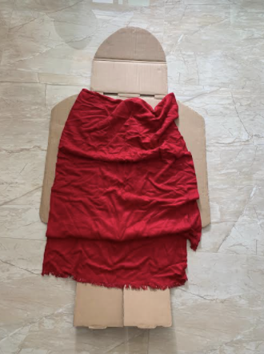
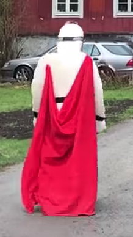
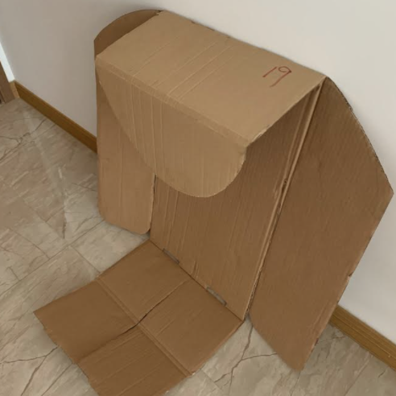

Jul 21, 2021
Constraints
There are ten tenets of the art form:
I really like that Kenji Kawakami (who first created chindogu) helds strong views against the concept of materialism and capitalism, once stating: “I despise materialism and how everything is turned into a commodity…”
Here goes my Chindogu Invention challenge …
Step one — EmpathiseHere are a few of the daily ‘problems’ I am facing:
Step three — Ideation
What
can I build to help?
Step four —Prototype
Since I
am really sleepy now, I decided to go with wearable mattress! Technically I need a foam
mattress kind of material. For my prototype, I am using a cardboard. Firstly, I am cutting
it
according to my height and body shape so I can carry it around more easily.

I look kinda like R2D2 with supergirl cape no?
I added a blanket in case I feel cold. Next, I need something to make it a wearable.
Step five — Let’s test!So now I can walk around looking like a cross of a Star Wars character and Supergirl. How cool is my new blanket cape? When I am tired, I can lie down wherever I want on my wearable mattress, flip my blanket over … time for a nap!

Napping monster is born
Is this usable? Somewhat! Would I use it? I’m too embarrassed to be seen with it ….. unless it is Halloween day everyday….
ReflectionIt was an interesting challenge thinking about problem solving through the lens of chindogu.
Allowing ourselves to come up with ideas that don’t really solve a problem is a good mental
exercise.
The true beauty of making un-useless things is, this acknowledgment that we don’t always
know what the best answer is — it turns off that voice in our head that tells us that we
should know exactly how the world works.
It also liberates us from worrying how something must work in a certain way. Given a few
iterations to our chindogus, never know it can become a real useful product.

My mattress is sleepy now … like owner like mattress…